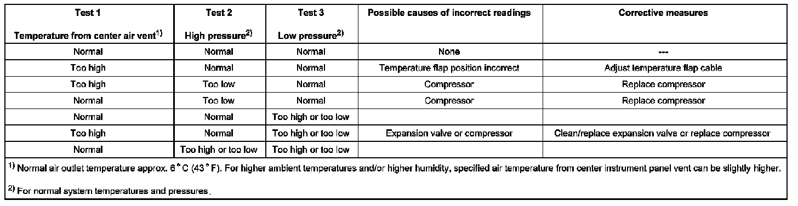

A/C Refrigerant System Pressures, Checking
A/C Refrigerant System Pressures, Checking
Check A/C refrigerant system pressures using these three tests:
1. Air temperature drop from center instrument panel outlet (A/C system cooling performance)
2. A/C system high pressure
3. A/C system low pressure.
The combined results of all three steps determine which part of the A/C system is causing the problem.
Test conditions
- A/C refrigerant system fully charged; discharge, evacuate and recharge system if necessary
- Condenser and radiator clean and free of obstructions (spray clean if necessary)
- Air distribution can be adjusted correctly using control knobs (all air distribution flaps reach end positions)
- Wiring OK per wiring diagram
- Outside (ambient) air temperature between 20 - 30 degree C (68 - 86 degree F)
- Drive belts for A/C compressor and Generator in good condition and properly tensioned
Test 1: Air temperature drop from center instrument panel outlet, checking (A/C system cooling performance)
- Start engine.
- Set temperature control to maximum cold (LO").
- Select minimum blower speed (manual override) by pressing "decrease blower speed" button (observe blower speed display in control head).
- Adjust air distribution to instrument panel outlets.
- Insert thermometer into center instrument panel outlet and raise engine speed to approximately 1500 RPM.
Specified result
With humidity normal and outside (ambient) temperature between 20 - 25 degree C (68 - 77 degree F), system is cooling satisfactorily if air temperature from center instrument panel vent drops below 10 degree C (50 degree F) within 1 minute.
For higher ambient temperatures and/or higher humidity, specified air temperature from center instrument panel vent can be slightly higher.
If specified reading is not obtained, perform tests 2 and 3, then compare results of all three tests table.
Test 2: A/C system high pressure, checking
- Connect high- and low-pressure hoses of refrigerant recovery/ recycling/recharging unit Kent-Moore ACR(4) (or UL approved equivalent), to high- and low-pressure service valves.
- Disconnect electrical connector from coolant fan.
- Start engine.
- Set temperature control to maximum hot ("HI").
- Adjust air distribution to footwell outlets.
- Raise engine speed to approximately 1500 RPM.
Specified result
System high pressure is normal if high-pressure gauge reads 232 psi (16 bar) within 30 seconds.
If specified reading is not obtained, also perform test 3 and compare results of all three tests table.
Test 3: A/C system low pressure, checking
- Connect high- and low-pressure hoses of refrigerant recovery/recycling/recharging unit Kent-Moore ACR(4), (or UL approved equivalent), to high- and low-pressure service valves.
- Start engine.
- Set temperature control to maximum cold ("LO").
- Select minimum blower speed (manual override)) by pressing "decrease blower speed" button (observe blower speed display in control head).
- Adjust air distribution to instrument panel outlets.
- Raise engine speed to 1500 RPM.
Specified result
System low pressure is normal if low-pressure gauge reads 22 - 36 psi (1.5 - 2.5 bar) within 30 seconds.
If specified reading is not obtained, compare results of all three tests table.
